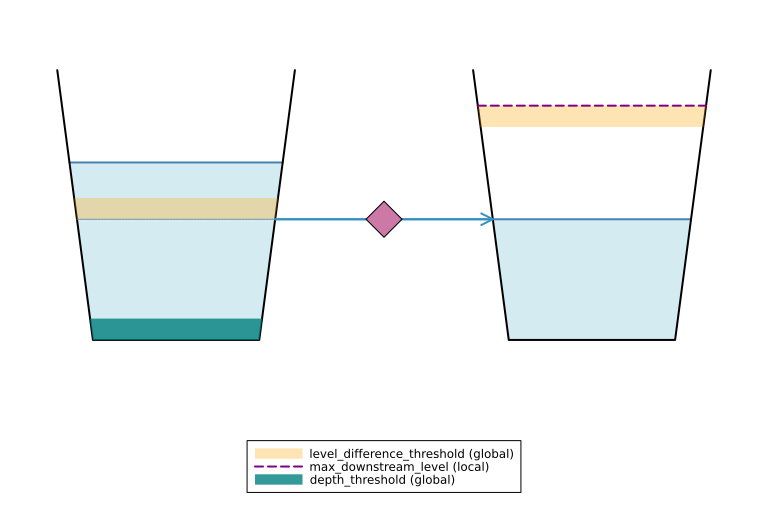
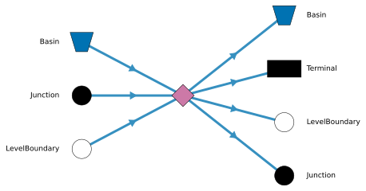
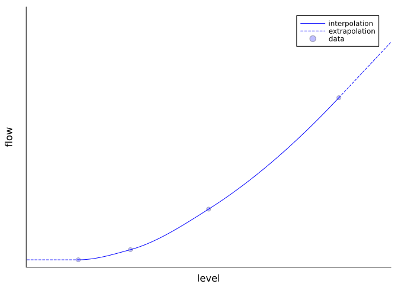

Code
include("../../../utils/plot_connector_schematic.jl")
plot_connector_schematic(:TabulatedRatingCurve)
A TabulatedRatingCurve determines outflow from a Basin by looking up the flow rate that corresponds to the current upstream level from a rating curve. The TabulatedRatingCurve takes a rating curve as input. Use it for instance to model flow over a weir.
include("../../../utils/plot_connector_schematic.jl")
plot_connector_schematic(:TabulatedRatingCurve)
The diagram below shows which node types are allowed directly upstream (left) and downstream (right) of this node. This is a connectivity illustration, not a valid simulation model.
include("../../../utils/plot_node_connectivity.jl")
plot_node_connectivity("TabulatedRatingCurve")
include("../../../utils/gen_docs_table.jl")
table_from_schema(
Ribasim.Schema.TabulatedRatingCurve.Static;
restrictions = Dict(:level => "unique", :flow_rate => "start at 0, increasing"),
)| column | type | unit | optional | default | restriction |
|---|---|---|---|---|---|
| node_id | Int32 | - | x | - | - |
| level | Float64 | m | x | - | unique |
| flow_rate | Float64 | m³ s⁻¹ | x | - | start at 0, increasing |
| max_downstream_level | Float64 | m | ✓ | Inf | - |
| control_state | String | - | ✓ | - | - |
| allocation_controlled | Bool | - | ✓ | false | - |
The \(Q(h)\) relationship of a tabulated rating curve is defined as a PCHIPInterpolation, for more information see here.
using DataInterpolations
using Plots
level = [12.0, 12.2, 12.5, 13.0]
flow = [0.0, 0.5, 2.5, 8.0]
level_aug = copy(level)
flow_aug = copy(flow)
pushfirst!(level_aug, first(level) - 1.0)
pushfirst!(flow_aug, 0.0)
itp = PCHIPInterpolation(
flow_aug,
level_aug;
extrapolation_right = DataInterpolations.ExtrapolationType.Linear,
)
level_eval = range(first(level), last(level); length = 1000)
flow_eval = itp.(level_eval)
level_extrap_left = [first(level) - 0.3, first(level)]
flow_extrap_left = itp.(level_extrap_left)
level_extrap_right = [last(level), last(level) + 0.3]
flow_extrap_right = itp.(level_extrap_right)
c = :blue
plot(
level_eval,
flow_eval;
c,
label = "interpolation",
xticks = false,
yticks = false,
left_margin = 5Plots.mm,
)
plot!(level_extrap_left, flow_extrap_left; ls = :dash, c, label = "extrapolation")
plot!(level_extrap_right, flow_extrap_right; ls = :dash, c, label = "")
scatter!(level, flow; c, label = "data", markeralpha = 0.25)
xlabel!("level")
ylabel!("flow")
xlims!(first(level) - 0.2, last(level) + 0.2)
Below the lowest given level of 12.0, the flow rate is kept at 0. Between given levels the flow rate is interpolated using PCHIP interpolation. Above the maximum given level of 13.0, the flow rate keeps increases linearly according to the slope of the last segment.
For tabulated rating curves with a fixed maximum value (e.g. max capacity of a weir), enter a new row and re-enter the maximum flow_rate at a higher level:
| node_id | level | flow_rate |
|---|---|---|
| 2 | 12.0 | 0.0 |
| 2 | 12.2 | 0.5 |
| 2 | 12.5 | 2.5 |
| 2 | 13.0 | 8.0 |
| 2 | 13.1 | 8.0 |
Now this tabulated rating curve node has a flow rate of 8.0 \(\text{m}^3/\text{s}\) for all levels 13.0 or higher.
The flow rate is not allowed to decrease with higher levels. If you wish to e.g. simulate the (partial) closing of a weir when the water level exceeds a certain threshold, you can use an Outlet with a control node to set flow rates.
This table is the transient form of the TabulatedRatingCurve table. The only difference is that a time column is added. With this the rating curves can be updated over time. The max_downstream_level currently cannot be updated over time. Note that a node_id can be either in this table or in the static one, but not both.
table_from_schema(
Ribasim.Schema.TabulatedRatingCurve.Time;
restrictions = Dict(:level => "unique per time", :flow_rate => "start at 0, increasing per time"),
)| column | type | unit | optional | default | restriction |
|---|---|---|---|---|---|
| node_id | Int32 | - | x | - | - |
| time | DateTime | - | x | - | - |
| level | Float64 | m | x | - | unique per time |
| flow_rate | Float64 | m³ s⁻¹ | x | - | start at 0, increasing per time |
| max_downstream_level | Float64 | m | ✓ | Inf | - |
The TabulatedRatingCurve is a tabulation of a Basin’s discharge behavior. It describes a relationship between the Basin’s level and its discharge. It can be understood as an empirical description of a Basin’s properties. This can include a weir, but also the lumped hydraulic behavior of the upstream channels.
\[ Q = \phi f(h) \]
Where:
depth_threshold, to the Basin bottom;downstream_level + level_difference_threshold to downstream_level, see Solver settings;max_downstream_level - level_difference_threshold to max_downstream_level.For depth_threshold, level_difference_threshold see Solver settings.
A TabulatedRatingCurve can be controlled by the allocation algorithm. To enable this, set allocation_controlled = True in the Static table. When allocation-controlled, the flow through the TabulatedRatingCurve is no longer determined solely by the \(Q(h)\) relationship; instead the allocation algorithm decides the flow rate within the physical capacity of the curve.
During each allocation time step the algorithm:
In the physical layer the flow is set to the minimum of the allocated flow rate and the physics-based \(Q(h)\) flow rate. This ensures that the flow never exceeds what is physically possible, even if the allocation algorithm assigned a higher value (e.g. because levels changed since the last allocation step). The same reduction factor \(\phi\) is still applied:
\[ Q = \phi \cdot \min(Q_\text{allocated},\; Q(h)) \]
This means the flow is still smoothly reduced to zero when:
max_downstream_level.When allocation is disabled, allocation_controlled has no effect and the TabulatedRatingCurve follows its normal physics-based \(Q(h)\) relationship.
In a typical setup you want the TabulatedRatingCurve to follow its \(Q(h)\) relationship under normal conditions and only reduce flow when there is a water shortage (i.e. when a demand cannot be met). This is achieved by giving the TabulatedRatingCurve node a negative route priority by default.
Route priority acts as a cost in the allocation optimization: higher values make feeding water through a node more expensive. A negative route priority makes it prefer to send water through this node. As a result, the flow will track the physical \(Q(h)\) curve as long as there is enough water. When water is scarce and demands compete, allocation will reduce the TabulatedRatingCurve flow to satisfy higher-priority demands first. For how route priorities are configured in the model settings, see Usage: Allocation settings.
If your TabulatedRatingCurve represents a diversion, you can set a positive route priority, to make sure only the needed water is diverted.
For a full worked example, see Allocation-controlled TabulatedRatingCurve on the examples page.